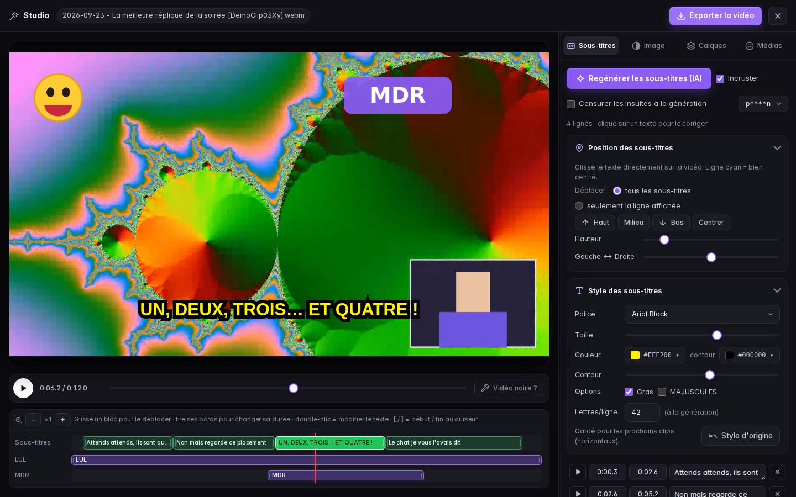
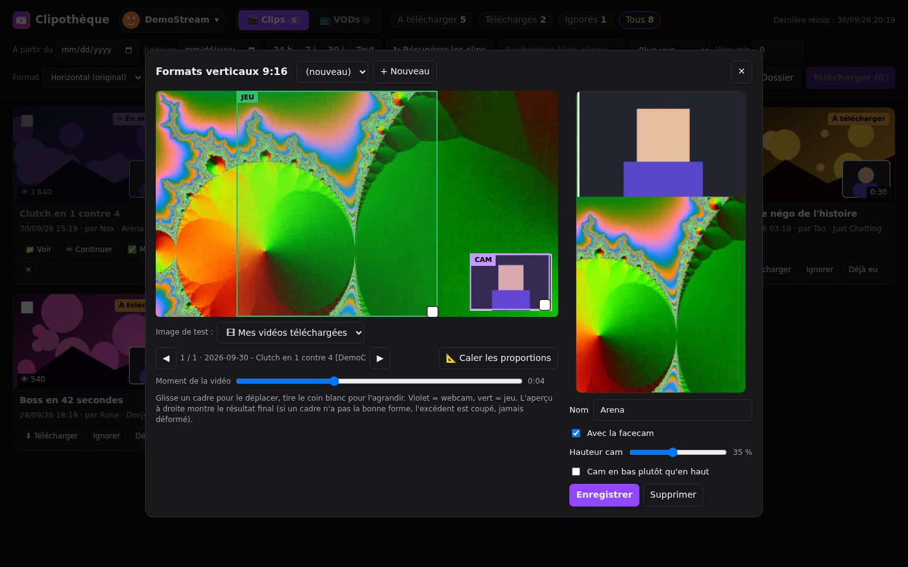
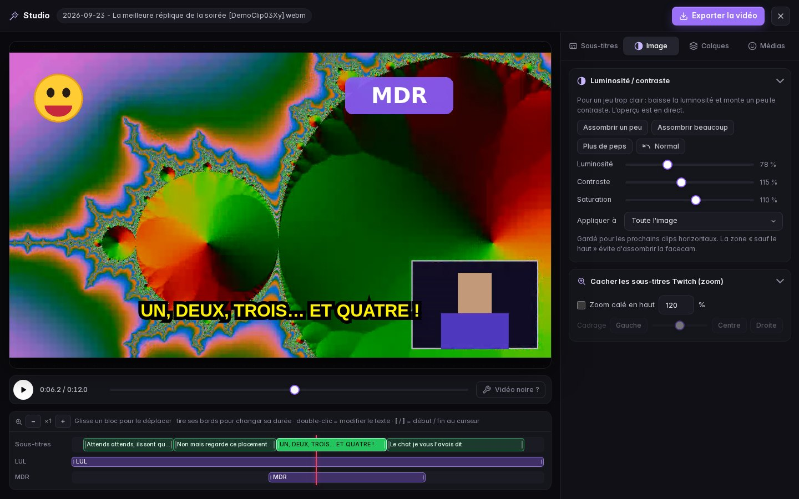

Pour les monteurs de streamers, sur Windows et Mac
Du clip Twitch au TikTok sous-titré, sans changer d'outil.
Clipothèque trouve les clips de tes streamers, les télécharge en 9:16 et ajoute les sous-titres par IA, en local.
Fini le jonglage entre cinq outils.
Sans Clipothèque
- Chercher les clips un par un sur Twitch
- Les télécharger sur un site rempli de pubs
- Recadrer chaque clip à la main pour le vertical
- Taper les sous-titres, ou payer un service en ligne
- Tenir un tableur de ce qui est déjà monté
Avec Clipothèque
- Tous les clips de la chaîne, triés par date ou par vues
- Un clic par clip, ou toute une sélection d'un coup
- Le cadrage facecam et jeu réglé une fois pour toutes
- Les sous-titres générés par IA, sur ton ordinateur
- Chaque clip en couleur : téléchargé, en cours, monté
Sous-titres, emotes et GIF, sans ouvrir de logiciel de montage.
Le Studio transcrit le clip, te laisse corriger sur une timeline et exporte une vidéo prête à publier. Il retient tes réglages, pour que le clip suivant parte déjà au bon format.

- Sous-titres par IA, en localWhisper tourne sur ton ordinateur : rien n'est envoyé en ligne. Censure des insultes en option.
- Emotes de la chaîneTwitch, 7TV, BTTV et FFZ récupérées en un clic, avec tes GIF et logos.
- Export MP4 et .srtVidéo finie, ou sous-titres à reprendre dans DaVinci Resolve ou Premiere.
- Banque de mots par streamerL'IA écrit juste son pseudo, sa communauté et son jargon. « Analyser une rediffusion » propose les noms qui reviennent.
- Réglages et templatesPosition et style des sous-titres repris d'un clip à l'autre. Un template par streamer, avec son intro et son outro.
- Miniature en un clicUne image du clip, sans sous-titres, prête pour TikTok ou YouTube.
La facecam en haut, le jeu en bas.
Tu places les deux cadres une seule fois, sur une image de tes propres clips. Ensuite, chaque téléchargement arrive en 9:16, prêt pour TikTok, Reels et Shorts.
Un format par jeu ou par streamer : Just Chatting, FPS, cam en bas…

Un jeu trop clair ? Assombris-le.
Luminosité, contraste et saturation, sur toute l'image ou seulement sur le jeu pour ne pas toucher à la facecam. Un zoom cache aussi les sous-titres Twitch d'origine.

Et tout ce qui fait gagner du temps au quotidien.
- VODs et extraitsUne rediff entière ou juste un passage, avec des raccourcis vers les moments clippés.
- Plusieurs streamersUn dossier rangé par streamer. Tu passes de l'un à l'autre en un clic.
- Suivi du montageGris clair téléchargé, bleu en cours, vert monté : tu sais toujours où tu en es, même après une pause.
- Récupération automatiqueUne tâche planifiée télécharge les nouveaux clips de la semaine sans ouvrir l'appli.
Toutes les fonctionnalités, deux façons de payer.
Paiement sécurisé par Lemon Squeezy, TVA incluse. La clé de licence arrive par e-mail.
Mensuel
4,99 € par mois
Sans engagement, résiliable à tout moment.
- Toutes les fonctionnalités
- Toutes les mises à jour
- 3 ordinateurs par licence
- Streamers illimités
À vie Le plus rentable
50 € une seule fois
Moins cher que 11 mois d'abonnement.
- Toutes les fonctionnalités
- Mises à jour incluses
- 3 ordinateurs par licence
- Streamers illimités
- Remboursé sous 14 jours
- Carte bancaire ou PayPal
- Clé de licence par e-mail
Windows 10 ou 11, 64 bits
Mac à puce Apple (M1 et suivants), macOS 14 ou plus récent
Pour les sous-titres par IA : 8 Go de mémoire conseillés et environ 550 Mo pour le modèle, téléchargé une seule fois.
Clipothèque Pro : l'onglet Auto en plus.
Tout Clipothèque, plus un onglet Auto qui surveille les chaînes que tu suis et repère leurs nouveaux clips pendant le live. Tout se calcule sur ton ordinateur, sans crédits ni minutes facturées.
Pro mensuel
9,99 € par mois
Sans engagement, résiliable à tout moment.
- Toutes les fonctionnalités
- Onglet AutoOnglet Auto : veille des chaînes, nouveaux clips triés par vues par heurenbsp;: veille des chaînes suivies
- Surveillance en fond, fenêtre fermée
- 3 ordinateurs par licence
Pro à vie Le plus rentable
89 € une seule fois
Déjà client à vie ? Écris au support pour ta réduction de 40 €.
- Toutes les fonctionnalités
- Onglet AutoOnglet Auto : veille des chaînes, nouveaux clips triés par vues par heurenbsp;: veille des chaînes suivies
- Surveillance en fond, fenêtre fermée
- 3 ordinateurs par licence
Bientôt dans Pro : chaque nouveau clip transformé tout seul en short vertical sous-titré, prêt à publier.
Questions fréquentes
Une autre question ? Écris à clipotheque.support@gmail.com
Faut-il un compte Twitch ?
Non. Colle le nom ou le lien de la chaîne : Clipothèque lit ses clips et VODs publics.
Ça marche sur Mac ?
Oui, sur les Mac à puce Apple (M1, M2, M3, M4…) avec macOS 14 ou plus récent. Les Mac à processeur Intel ne sont pas pris en charge. La même clé de licence fonctionne sur Windows et sur Mac.
Sur combien d'ordinateurs puis-je l'installer ?
3 par licence, par exemple ton PC fixe et ton portable. Tu peux libérer un ordinateur à tout moment depuis l'appli, avec le bouton « Désactiver sur ce PC ».
Mes vidéos sont-elles envoyées en ligne ?
Non. Tout reste sur ton ordinateur, y compris les sous-titres par IA. L'appli ne se connecte que pour lister et télécharger les clips, vérifier ta licence et proposer les mises à jour.
Et sans internet ?
Le montage fonctionne hors ligne. La licence est vérifiée régulièrement et reste valable jusqu'à 7 jours sans connexion.
Je peux l'utiliser pour n'importe quelle chaîne ?
Clipothèque est faite pour les monteurs qui travaillent avec l'accord du streamer. Les vidéos appartiennent à leurs auteurs : tu restes responsable de l'usage que tu en fais et du respect des conditions d'utilisation de Twitch.
Mensuel ou à vie, lequel choisir ?
Les deux donnent exactement les mêmes fonctionnalités. Le mensuel est idéal pour essayer sur une saison de montage. Si tu montes toute l'année, l'offre à vie devient rentable dès le 11e mois.
Comment résilier l'abonnement ?
Depuis ton espace client Lemon Squeezy (lien dans l'e-mail d'achat, ou bouton « Gérer mon abonnement » dans l'appli). Tu gardes l'accès jusqu'à la fin de la période payée.
Et si ça ne me convient pas ?
Écris-nous dans les 14 jours suivant l'achat : on te rembourse. Voir la politique de remboursement.
Un avertissement s'affiche à l'installation
C'est normal pour une appli récente qui n'est pas encore signée. Sur Windows : « Informations complémentaires » puis « Exécuter quand même ». Sur Mac : Réglages Système, Confidentialité et sécurité, puis « Ouvrir quand même ». Une seule fois.